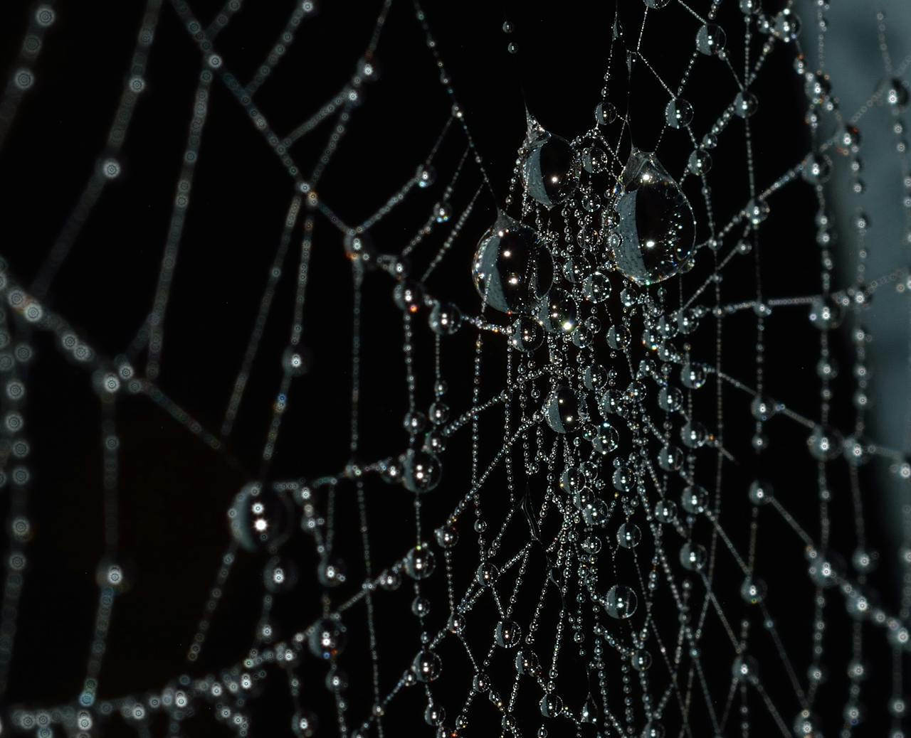

The small spider, exhausted and cold from the rain, chooses to seek refuge and weather the storm. She finds a nice place in the cave, away from the trickling water, and cuddles into a tight ball. As she falls asleep, the sound of rainfall drumming on the cave's roof soothes her into a blissful slumber.
As the hours pass, the rain gradually fades, its constant hammering giving way to a faint patter until halting entirely. The earthy aroma of moist soil mingles with the pleasant perfume of adjacent flowers, leaving the air damp and fresh.
The small spider awakens from her sleep, feeling energized by the rest and the fresh, damp air. Stretching her legs, she carefully tries each one to ensure they are all functional after her slumber. Satisfied, she steps out of her comfortable cave nook, her eight legs effortlessly carrying her across the now-moist earth.
As she makes her way back to her web, Spindle comes across familiar sights and scents that reassure her that she is on the right track. The sun begins to peek through the clouds, throwing a warm glow across the landscape. The small spider feels relieved and joyful when she finally reaches her web, which gleams with raindrops in the sunlight.
